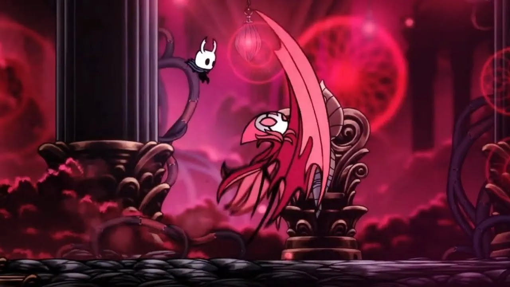
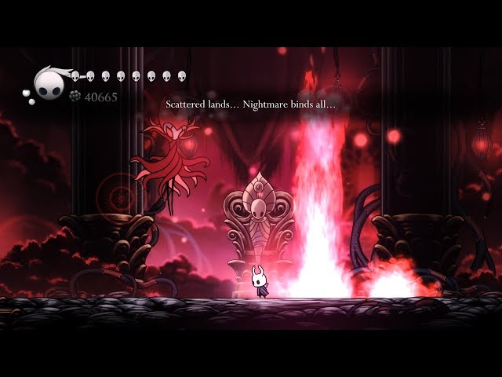

Recommended Charms
- Quick Focus
- Unbreakable Strength
- Shaman Stone
- Quick Slash
- Mark of Pride
- Longnail
Moveset
DASH SLASH
He dashes toward you while slashing.
You can avoid this by jumping over him and downslashing as he passes
FIRE PILLAR
Spawns four fire pillars underneath you.
You can avoid this by dashing horizontally as each pillar is about to hit you. In betweeen fire pillar spawns, he is very vulnerable, which allows you to get several hits.